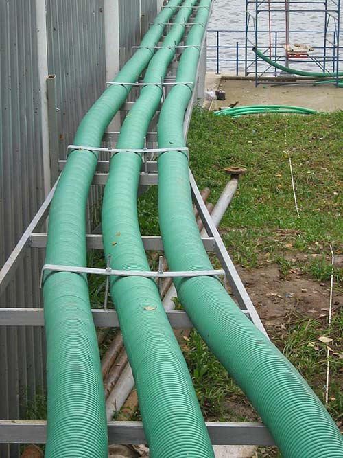
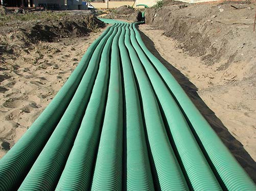
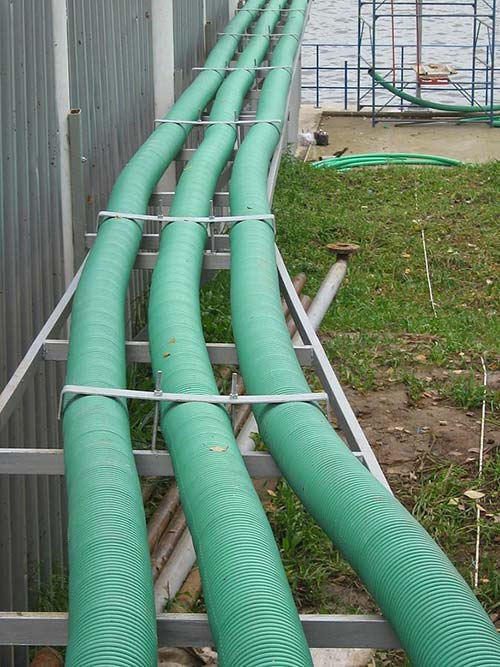
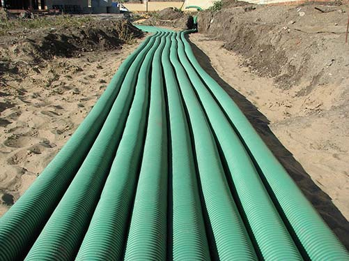

ПРОИЗВОДСТВО
На базе "Производственной фирмы МЗК" имеются широкие возможности по обработке и изготовлению изделий из металла, таких как:
- Резервуары хранения топлива и резервуарное оборудование
- Контейнерные автозаправочные станции от 5 до 60 м.куб. как стандартного, так и индивидуального исполнения
- Навесы, перекрытия и ангары
- Изделия др. хозяйственной деятельности с объемом переработки металла 250-300 тонн в месяц
-
Двустенные резервуары и резервуарное оборудование как стандартного так и специального назначения
-
Изготовление и монтаж контейнерных и модульных АЗС
-
Металлоконструкции навесов и операторских блоков АЗС
ОБОРУДОВАНИЕ
При проведении работ на тех или иных объектах топливных парков и АЗС, необходимо применять технологическое оборудование, которое будет соответствовать техническому регламенту и статусу применения данного объекта
Специалисты ООО "МЗК Технология" помогут грамотно подобрать оборудование, изготовить и приобрести или установить его в кратчайшие сроки, а при реконструкции, в большинстве случаев, поменять вышедшее из строя оборудование без остановки хозяйственной деятельности объекта
Современное развитие науки и техники сегодня во всех отраслях нашей промышленности и в частности топливо-энергетическом комплексе, подразумевают применение последних достижений мировых и отечественных лидеров в производстве топливного оборудования и в сфере предоставляемых услуг
В области разработки и применения систем технологического оборудования для различных объектов топливообеспечения ООО "МЗК Технология", имеющая в своем штате высококвалифицированных специалистов, занимает лидирующие позиции на рынке
Специалисты с 20 летним стажем работы в данной области, готовы предложить свои услуги в широком спектре технологических процессов топливообеспечения любых энергетических установок, а также в области приема, хранения и выдачи топлива - АЗС, нефтебаз и пунктов хранения топлива

 


